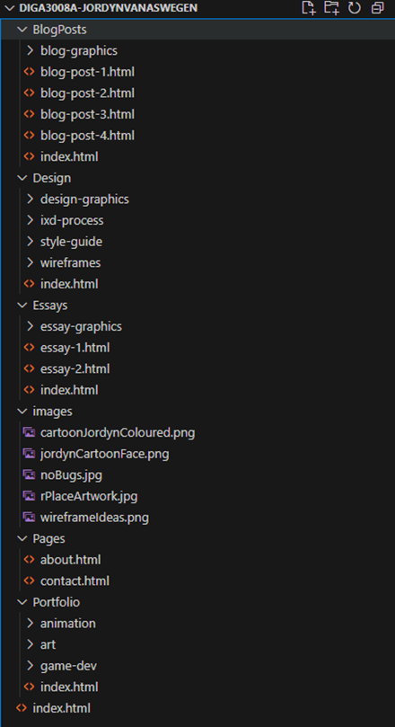

Interaction Design (IxD) Process
User Alignment
User alignment in web design involves understanding the needs, behaviors, and expectations of the target audience. For my portfolio website, I identified two primary audience groups:
-
Employers looking to evaluate my game design, animation, and digital art skills.
Potential clients interested in commissioning artwork or reviewing my creative work.
Understanding My Audience’s Goals
To cater to these audiences, I structured my website to prioritize easy access to key information:
-
Employers need clear navigation to my portfolio, contact details, and an overview of my artistic and technical capabilities.
Clients should find my artistic style and past projects quickly, allowing them to assess my work for potential commissions.
Addressing My Audience’s Needs
I implemented the following design choices to improve usability:
- Clear navigation bar with easily accessible sections for Portfolio, About, Blog, and Contact.
- Drop-down menus for portfolio categories, making subcategories like "Traditional Art" or "3D Animation" more accessible.
- Clickable elements and hyperlinks that connect related sections, allowing users to move seamlessly between topics.
- Visuals and interaction using background elements and a comic book aesthetic to enhance engagement.
Site Mapping and Structure
To maintain a logical flow, I developed a structured site map:-
Home Page: Overview with quick links to recent projects.
About Page: Information about my background, education, and interests.
Portfolio Pages:
Animation → 2D Animation / 3D Animation
Game Development → Prototypes / Completed Projects
Art → Traditional Art / Digital Art
Blog Posts: Updates on my industry experiences and creative process.
Essays: A section for academic writings related to interactive media.
Contact Page: Social media links, LinkedIn, email, and portfolio sites like Itch.io.
Site Mapping

Userflow chart

User Experience (UX) Goals
I designed my website with the following user experience objectives:-
Intuitive navigation: Users should easily locate information with minimal effort.
Consistency: Uniform design across all pages to establish familiarity.
Responsiveness: Optimized layouts for both desktop and mobile viewing.
Visual hierarchy: Strategic placement of content to guide user attention.
Section division: Clearly categorized content to improve searchability.
Interface Elements
Ive tried to incorporat key interface components to enhance interactivity:-
Navigation bar with dropdown menus for quick access.
Image galleries with lightbox functionality to showcase art details.
Contact form for inquiries and potential collaborations.
Social media icons using universally recognized symbols for ease of access.
Potential search bar to help users quickly find specific content (under consideration).
Semantic Markup & URL Scheme
Semantic HTML elements ensure accessibility and improve SEO. For example:-
header for navigation elements.
nav for primary and secondary menus.
article for blog posts and essays.
To maintain an intuitive URL structure, I organized my directories as follows:
-
Portfolio: /Portfolio/index.html
Game Development: /Portfolio/game-dev/index.html
Art: /Portfolio/art/index.html
Animation: /Portfolio/animation/index.html
About Me: /Pages/about.html
Contact: /Pages/contact.html
Blog Posts: /BlogPosts/index.html
Folder Structure
 This structure ensures that pages are logically grouped, improving navigation and SEO.Reflection on Development Progress
Iteration 3: Desktop Version For the third iteration of my desktop wireframes, I made refinements to simplify and improve clarity. The main changes include:-
Removed background images to create a cleaner, more professional look.
Streamlined wireframe elements to ensure better readability and ease of navigation.
- Simplified header and footer to reduce clutter and improve usability.
Dropdown menus replacing large navigation bars for a compact interface.
Mobile-friendly alignment ensuring content is easily scrollable.
Touch-friendly buttons with adequate spacing to prevent misclicks.